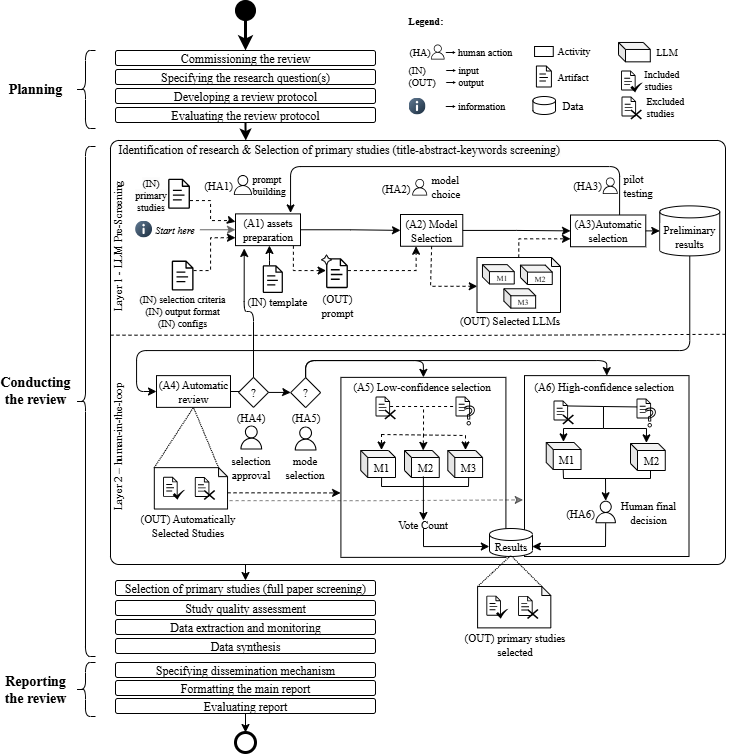

Bias Mitigation for LLM-Assisted Systematic Literature Reviews
BM4LLM-SLR is a system designed to support researchers in the study selection phase of Systematic Literature
Reviews (SLRs), making the use of Large Language Models (LLMs) more reliable and transparent.
Why using BM4LLM-SLR?
Systematic Literature Reviews are essential for building scientific evidence, but they are labor-intensive. LLMs have the potential to assist, but they may introduce bias or inconsistencies if used alone.
BM4LLM-SLR introduces an additional layer of bias mitigation, increasing trustworthiness through configurable
confidence thresholds, reviewer involvement, and strictness controls.

FAQ
A systematic review is a structured methodology used to identify, evaluate, and synthesize studies on a
given topic, ensuring comprehensive and unbiased evidence gathering. In Software Engineering area this
method was adapted by Barbara A. Kitchenham. She wrote a technical report that became the base guideline
to SLR method - access the reference here.
Yes, the process for studies selection are very similar, hence, BM4LLM-SLR can (for now) support both systematic reviews and systematic mappings.
Our proposal is not trust 100% in LLM decisions. Therefore, the main premisse of BM4LLM-SLR is to include human verification that ratifies the decisions. BM4LLM-SLR also includes a bias mitigation layer, allowing users to configure confidence levels, reviewer involvement, and strictness. This reduces the risk of bias compared to raw LLM outputs. Our recommendation is to always check the exclusions to not loose any important studies.
The system is flexible and can be used with different LLMs. The choice depends on availability, cost,
and performance for your research area.
Integration with LLMs is still experimental in this version. We are actively improving the tool to enable full automation in the near future. If you want to use the Ollama environment, we recommend installing it locally or running it in a Docker container. Once set up, you can link it at the top of the page and send prompts to the model automatically.
Not yet, BM4LLM-SLR is its early stage of experimentation and soon will be published. Please check our
documentation for citation details.
Partially, BM4LLM-SLR is independent, but we provide an importation tool that accepts xls and bib files that come from parsifal tool. A better integration with Parsifal or other SLR tools is under consideration for future releases.
Systematic Literature Reviews Guidelines
Authors
Title
Year
Link
Kitchenham, B.; Charters, S.
Guidelines for Performing Systematic Literature Reviews in Software Engineering (EBSE-2007-01)